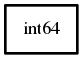

int64
Object Hierarchy:

Description:
[ SimpleType ]
public struct int64
Content:
Constants:
- public const int64 MIN
The minimum value which can be held in a int64
.
- public const int64 MAX
The maximum value which can be held in a int64
.
- public const unowned string FORMAT
This is the platform dependent conversion specifier for scanning and
printing values of type int64.
- public const unowned string FORMAT_MODIFIER
Static methods:
Methods: